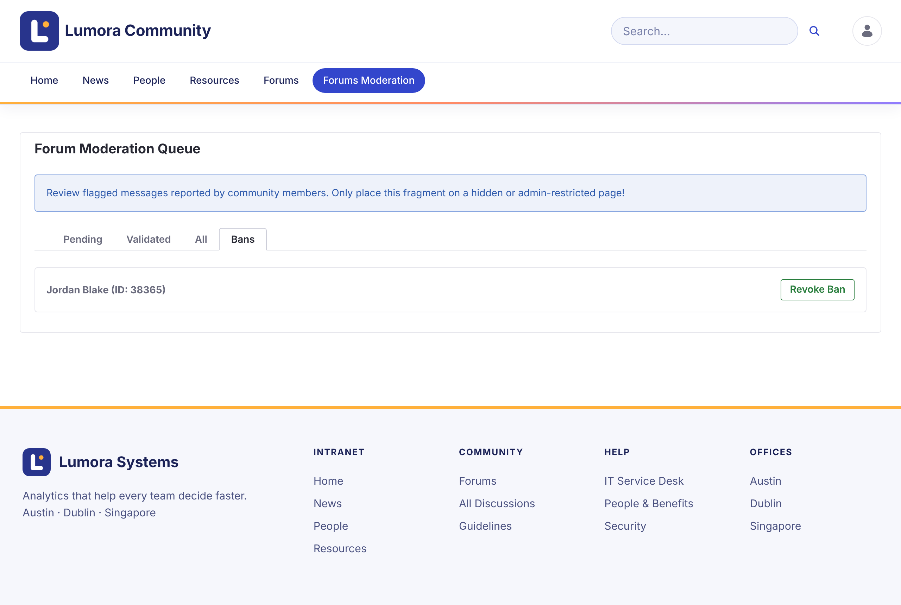

Banning Members
A banned member can still read the forum, but can’t start topics or reply. Their existing posts stay. When they try to post, they see Your account has been banned from participating in the forums.
Banning a Member
-
In the moderation queue, open the Validated tab.
-
On a report of the member’s topic, click Ban Author.
-
Confirm.
The member is listed on the Bans tab.

A ban applies to one site. A member banned on one forum site can still post on another.
A ban is the site role Forum Banned. Administrators can also assign it to a member in the site’s memberships.
Lifting a Ban
On the Bans tab, click Revoke Ban next to the member.